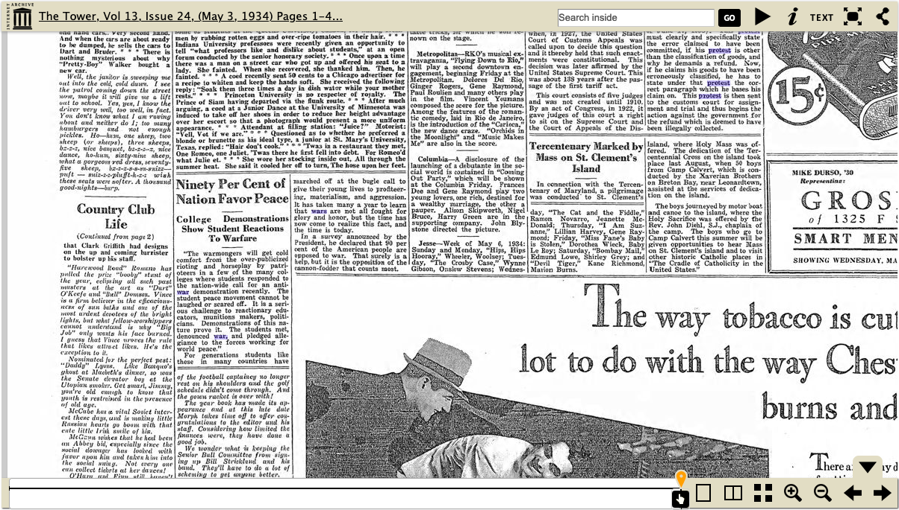
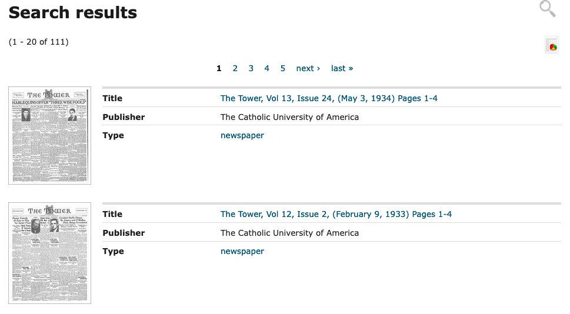

Soren Smallwood
| Input | Output |
|---|---|
| Select subcollection (The Tower 1922-1940) | Directory of links organized by year and month of issue |
| Select issue date (Jan. 27, 1938) | Full-page images of issue with vertical scrolling |
| Search inside | Search term highlighted in blue; yellow markers along bottom slider for each page where search appears |
| Select text view | Full text of issue without original formatting |
The primary strength of the site is the content itself: the newspaper scans are large and high-quality, and most have been digitized to allow for some searchability. However, the site has several shortcomings that make it difficult to take full advantage of the archive. Loading takes a long time, making any navigation slow and frustrating. Locating the issues for a particular time period is easy enough, but searching for an event or theme is more difficult. The site allows for keyword searching within the newspaper text (see first image below; search terms are highlighted in blue), but the main search results page doesn't include any previews of context that would help the user quickly determine their relevance (see second image below).
 Long load times were also a major issue: the user became frustrated quickly and would click on links repeatedly or scroll up and down while waiting for images to load. Something different I observed during the mini-usability test is that the small text of the newspaper scans was an issue. The user frequently squinted at the screen, and later in the test would immediately click to zoom in when visiting a new page, even before the image had loaded. Improving load times would be a major improvement for the system, even without changing any other features. I would consider changing the default zoom level that the image pages load at to make the text larger and easier to read without making the user constantly adjust it manually. Brief search result previews would also improve the site's usability.